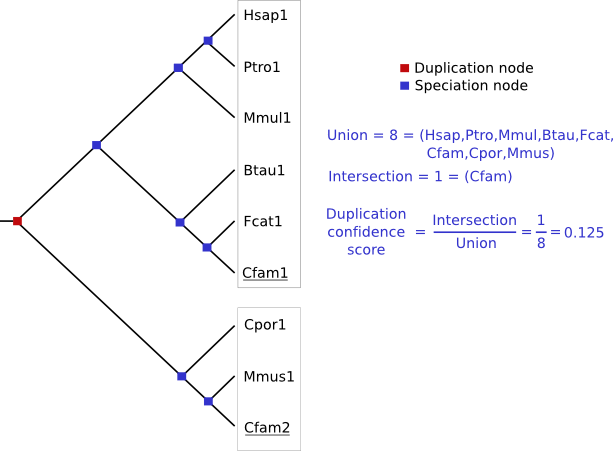
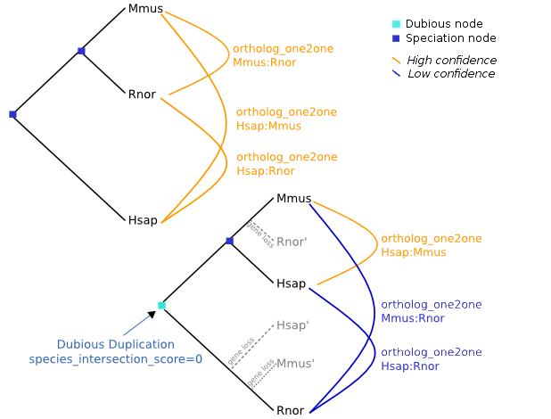
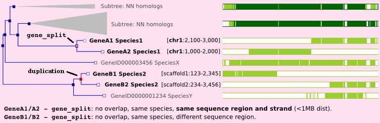

Protein trees and orthologies
Overview
The gene orthology and paralogy predictions are generated by a pipeline
where maximum likelihood phylogenetic gene trees (generated by TreeBeST5)
play a central role. They aim to represent the evolutionary history of
gene families, i.e. genes that diverged from a common ancestor. These
gene trees reconciled with their species tree have their internal nodes
annotated to distinguish duplication or speciation events.
This methodology was published in
EnsemblCompara GeneTrees: Analysis of complete, duplication aware phylogenetic trees in vertebrates.
Vilella AJ, Severin J, Ureta-Vidal A, Durbin R, Heng L, Birney E. Genome Research 2008 Nov 4. Please cite this
publication if you use the homologies from Ensembl. However, be aware that the pipeline has evolved since the publication,
and this HTML document is the up-to-date documentation.
There is a clear concordance with reciprocal best approaches in the
simple case of unique orthologous genes. However, the gene tree
pipeline is able to find more complex one-to-many and many-to-many
relations. This, for instance, significantly raises the number of Teleost
(bony fish) to Mammal orthologs and has even more dramatic effects on
Fly/Mammal or Worm/Mammal orthologous gene predictions. Using this
approach, we are also able to "time" duplication events which produce
paralogs by
identifying the most recent common ancestor (i.e. taxonomy level) for a
given
internal node of the tree.
The gene orthology and paralogy prediction pipeline has 9 basic steps:
- Load a representative translation of each gene from all species used in
Ensembl. We currently choose the longest translation annotated by the CCDS project, if any, or the longest protein-coding translation otherwise.
- run NCBI Blast+1 (refined with SmithWaterman) on every gene against every other (both
self and non-self species) in a genome-wise manner
- Build a sparse graph of gene relations based on Blast e-values and generate clusters using hcluster_sg2. Hcluster_sg has a little insight about the phylogeny of the species (namely: a list of outgroup species), which helps defining pertinent clusters for the ingroup species
- The largest clusters (more than 400 genes) are split using QuickTree7
- For each cluster, build a multiple alignment based on the
protein sequences using:
- either a combination of multiple aligners, consensified by M-Coffee3
- or Mafft4 when the cluster is too large, or MCoffee is too long
- For each aligned cluster, build a phylogenetic tree using
TreeBeST5 using the CDS back-translation of the protein multiple alignment
from the original DNA sequences. A rooted tree with internal duplication tags is
obtained at this stage, reconciling it against a species tree inferred from the NCBI taxonomy
- From each gene tree, infer gene pairwise relations of orthology and
paralogy types.
- A stable ID is assigned to each GeneTree. Please refer to the Family and GeneTree stable ID page for more info.
-
There is an extra optional step which calculates the dN/dS values for the
orthology relationships of closely related pairs of species, using codeml6.
Clustering
hcluster_sg2 performs hierarchical clustering under mean distance. It reads an input file that describes the similarity between two sequences, and groups two nearest nodes at each step. When two nodes are joined, the distance between the joined node and all the other nodes are updated by mean distance. This procedure is iterated until one of the three rules is met:
- Do not merge cluster A and B if the total number of edges between A and B is smaller than |A|*|B|/3, where |A| and |B| are the sizes of A and B, respectively. This rule guarantees each cluster is compact.
- Do not join A to any other cluster if |A| < 500. This rule avoids huge clusters which may cause computational burden for multiple alignment and tree building as well.
- Do not join A and B if both A and B contain plant genes or both A and B contain Fungi genes. This rule tries to find animal gene families. TreeFam clustering is done with outgroups.
Hcluster_sg also introduces an additional edge breaking rule: removes an edge between cluster A and B if the number of edges between A and B is smaller than |A|*|B|/10. This heuristic rule removes weak relations which are quite unlikely to be joined at a later step.
As the pipeline has to complete in time for the Ensembl releases, we limit the size of the clusters to 400 genes.
For larger clusters, we run Mafft4 and QuickTree7.
QuickTree is a very fast and efficient to build an unrooted phylogenetic tree. We then find the branch that best splits the cluster into two halves.
We recursively follow this approach until each sub-cluster is smaller than 400 genes.
Tree building
The CDS
back-translated protein alignment (i.e., codon alignment) is used to
build 5 different trees (within TreeBeST5):
- a maximum likelihood (ML) tree built, based on the protein alignment with the WAG model, which takes into the account the species tree
- a ML tree built using phyml, based on the codon alignment with the Hasegawa-Kishino-Yano (HKY) model, also taking into account the species tree
- a neighbour-joining (NJ) tree using p-distance, based on the codon alignment
- a NJ tree using dN distance, based on the codon alignment
- a NJ tree using dS distance, based on the codon alignment
For (1) and (2), TreeBeST uses a modified version of phyml release
2.4.5 which takes an input
species tree, and tries to build a gene tree that is consistent with
the topology of the species tree. This "species-guided" phyml uses the
original phyml tree-search code. However, the objective function
maximised during the tree-search is multiplied by an extra likelihood
factor not found in the original phyml. This extra likelihood factor
reflects the number of duplications and losses inferred in a gene
tree, given the topology of the species tree. The species-guided phyml
allows the gene tree to have a topology that is inconsistent with the
species tree if the alignment strongly supports this. The species tree
is based on the NCBI taxonomy tree (subject to some modifications
depending on new datasets).
The final tree is made by merging the five trees into one consensus
tree using the "tree merging" algorithm. This allows TreeBeST to
take advantage of the fact that DNA-based trees often are more
accurate for closely related parts of trees and protein-based trees
for distant relationships, and that a group of algorithms may
outperform others under certain scenarios. The algorithm
simultaneously merges the five input trees into a consensus tree. The
consensus topology contains clades found in any of the input trees,
where the clades chosen are those that minimize the number of
duplications and losses inferred, and have the highest bootstrap
support. Branch lengths are estimated for the final consensus tree
based on the DNA alignment, using phyml with the HKY model.
Homology types
Using the Gene Trees, we can infer the following pairwise relationships.
- Orthologues
Any gene pairwise relation where the ancestor node is a
speciation event. We predict several descriptions of orthologues:
- 1-to-1 orthologues (ortholog_one2one)
- 1-to-many orthologues (ortholog_one2many)
- many-to-many orthologues (ortholog_many2many)
- different-species paralogies —only as exceptions, see below — (reusing the three orthology types above)
- Paralogues
Any gene pairwise relation where the ancestor node is a duplication event. We predict several descriptions of paralogues:
- same-species paralogies (within_species_paralog)
- across-tree paralogies (other_paralog)
- fragments of the same ‐predicted‐ gene (gene_split)

Genes in different species and related by a speciation event are defined as
orthologs. Depending on the number of genes found in each species, we
differentiate among 1:1, 1:many and many:many relationships. Please, refer to the
figure where there are examples of the three kinds.
Genes of the same species and related by a duplication event are defined as
paralogs.
In the previous figure,
Hsap2 and Hsap2', and Mmus2 and Mmus2' are two examples of within-species-paralogs.
The duplication event relating the paralogues does not need to affect this species only.
For example, Mmus2' and Mmus3' are
also within_species_paralog but the duplication event has occurred
in the common ancestor between species Hsap (human) and species Mmus (mouse).
The taxonomy level "times" the duplication
event to the ancestor of Euarchontoglires.
When paralogous genes are too distant to be in the same gene tree, but can still be related as part of a
broader "super-family", they are labelled as other_paralog relationships.
This happens if they were part of the same cluster from hcluster_sg, but has been separated by QuickTree.
We compute a duplication confidence score for each duplication node as the Jaccard index of the sets of species under the two sub-trees.
The score is sometimes refered as "species intersection score".

A between_species_paralog corresponds to a relation between genes of different species where the ancestor node
has been labelled as a duplication node e.g. Mmus1:Hsap2 or Mmus1:Hsap3.
Currently, we do not annotate between_species_paralog, except in the following cases:
- When the node in the gene-tree is labelled as dubious (i.e has a duplication confidence score of 0)
- When there is no better match for any of the genes (regardless of the duplication confidence score)
- When at least one gene does not have a better match, and the duplication is weakly-supported (duplication confidence score ≤ 0.25)
The three cases can be the results of real duplications followed
by gene losses (as shown in the picture below), but most of the times occur as the result
of a wrong gene tree topology with a spurious duplication node. Often times, assembly errors
are behind these problems.
It is not clear whether these genes are real orthologs or not, but they are the best available candidates (given the data),
and we bend the definition of orthology to tag them as orthologues.
They however represent a lower confidence set of orthologues, and are marked as such in BioMart.
At the API / database level, there are marked as "non-compliant with the gene tree".
People interested in phylogenetic analysis mixing the orthologies and the trees should probably use the set of high confidence orthologies.

A paralog labelled as a gene_split is an artefactual type of paralogy. It is commonly
related to fragmented genome assemblies or a gene prediction that is
poor in supporting evidences (cDNA, ESTs, proteins, etc.).
Right after building the multiple alignment, we detect pairs pairs of genes that lie close to each other (<1MB) in the same sequence region and the same strand (see GeneA1/GeneA2 below).
They are forced to be paired in the gene trees under gene_split events, and represent our most confident set.
When there is no (or little) overlap between the
gene fragments in the same species and they lie in different sequence
regions in the assembly (see GeneB1/GeneB2 in the image below),
we let TreeBeST5 decide their best position in the tree.
They are linked by duplication nodes, and have a lower confidence index.

dN/dS estimations
We only calculate these dN/dS values for high-coverage closely-related pairs of
species, using codeml from the PAML package6. When the species evolutionary distance is too large, the
saturation of the dS values biases the estimated dN/dS
ratio. When the dS value of a given ortholog gene pair is too large, we mask out the dN/dS ratio,
although the N, S, dN, dS and log-likelihood (lnL) values can still be obtained for all pairs.
Notes and References
-
Camacho C et al,, "BLAST+: architecture and applications." BMC Bioinformatics. 2009 Dec 15;10:421.
We use the version 2.2.28, with the parameters: -seg no -max_hsps_per_subject 1 -use_sw_tback -num_threads 1
- Li, H et al., Hcluster_sg: hierarchical clustering software for sparse graphs.
We use yeast (Saccharomyces cerevisiae) as an outgroup (via the -C option) and the following command line arguments: -m 750 -w 0 -s 0.34 -O
The weights used in the graph are MIN(100, ROUND(-LOG10(evalue)/2))
-
M-Coffee:
Wallace IM, O'Sullivan O, Higgins DG, Notredame C. "M-Coffee: combining multiple sequence alignment methods with T-Coffee." Nucleic Acid Research. 2006 Mar 23;34(6):1692-9.
We use the version 9.03.r1318, with the aligner set: mafftgins_msa, muscle_msa, kalign_msa, t_coffee_msa
-
Mafft: Katoh K, Standley DM. "MAFFT multiple sequence alignment software version 7: improvements in performance and usability." Mol Biol Evol. 2013 Apr;30(4):772-80
We use the version 7.113 with the command line options: --auto
- Li, H et al., Compara-specific version, Original version (TreeBeST was previously known as NJTREE)
- Yang, Z. "PAML: a program package for phylogenetic analysis by maximum likelihood" Comput Appl Biosci. 1997 Oct; 13(5):555-556.
The parameters can be found in ensembl-compara/scripts/homology/codeml.ctl.hash
-
QuickTree: Howe K, Bateman A and Durbin R, "QuickTree: building huge Neighbour-Joining trees of protein sequences." Bioinformatics (Oxford, England) 2002;18;11;1546-7
QuickTree builds an unrooted tree and we recursively split the cluster by finding a branch that roughly holds half of the nodes on each side.